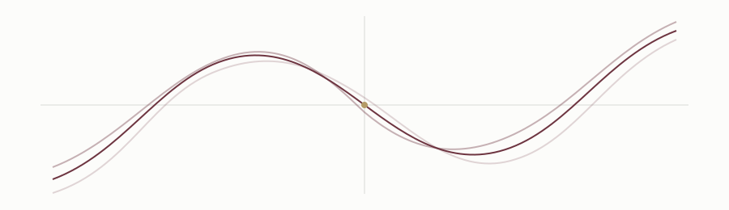

Diophantine equations
Arithmetic questions about integer and rational solutions and the structures that arise from them.
I work in algebraic number theory and arithmetic geometry, particularly on Diophantine equations, superelliptic curves, and Jacobian varieties.

Arithmetic questions about integer and rational solutions and the structures that arise from them.
Curves of the form yⁿ = f(x) and the relationship between their geometry and arithmetic.
Divisor classes, torsion points, reduction, and arithmetic consequences for curves.
Exploring analogues of classical torsion results for suitable families of superelliptic curves.
Ankita Das, Kalyan Banerjee, and Kalyan Chakraborty.
arXiv →Short pieces on ideas surrounding my research will appear here — from Jacobians and torsion to computational experiments with curves.
Visit the notes →